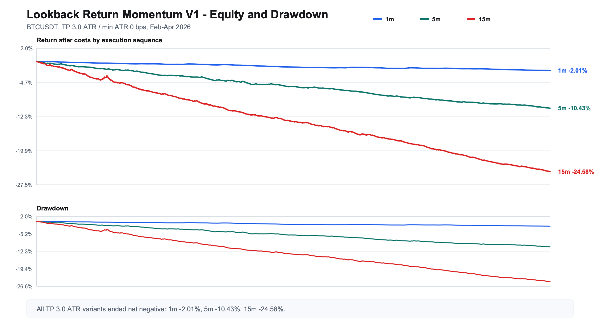
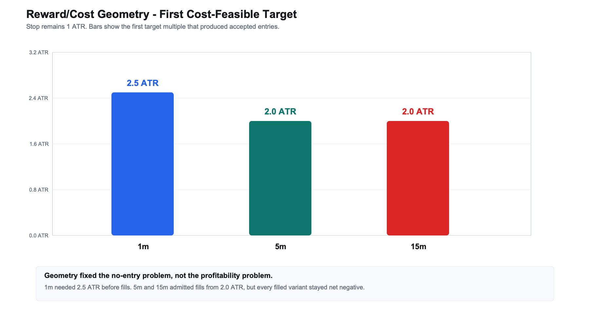
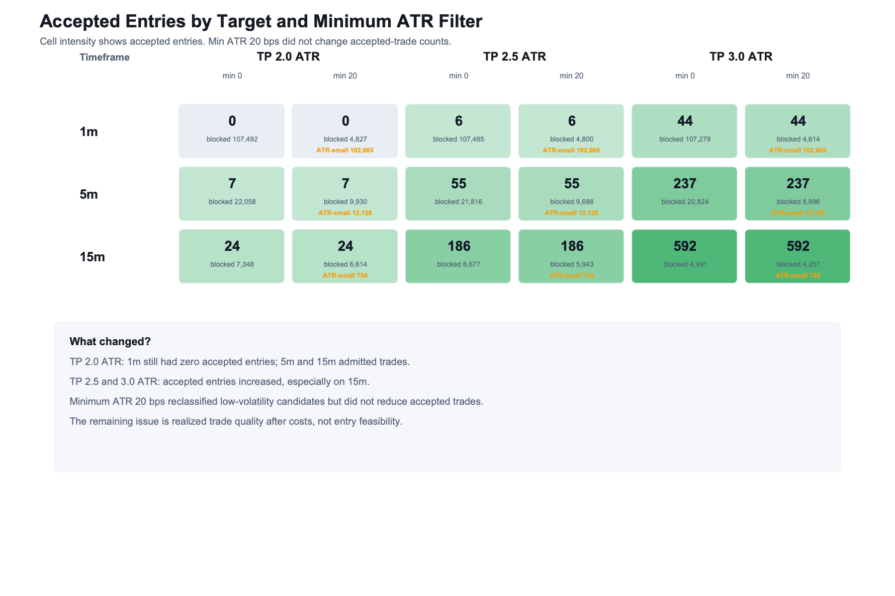
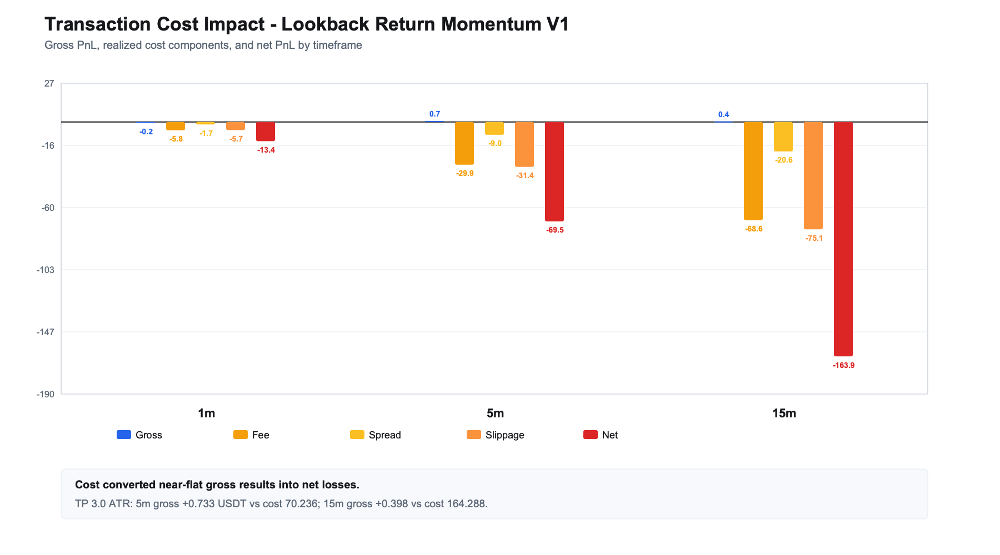
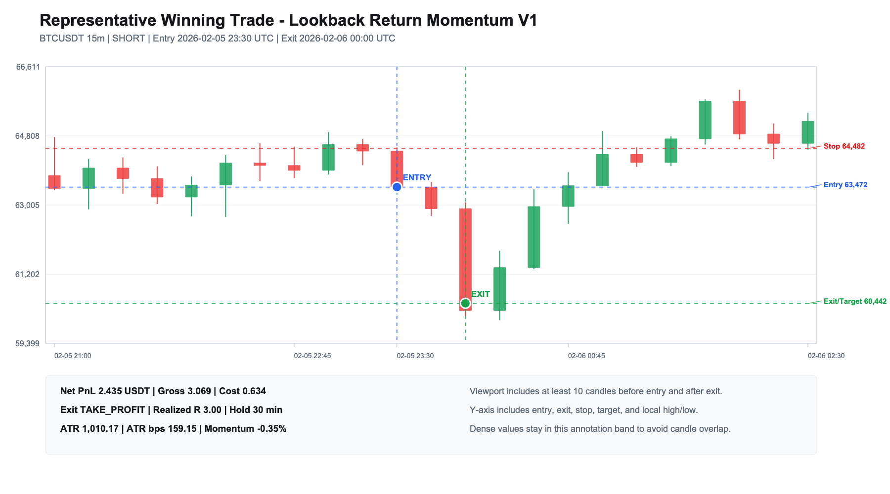
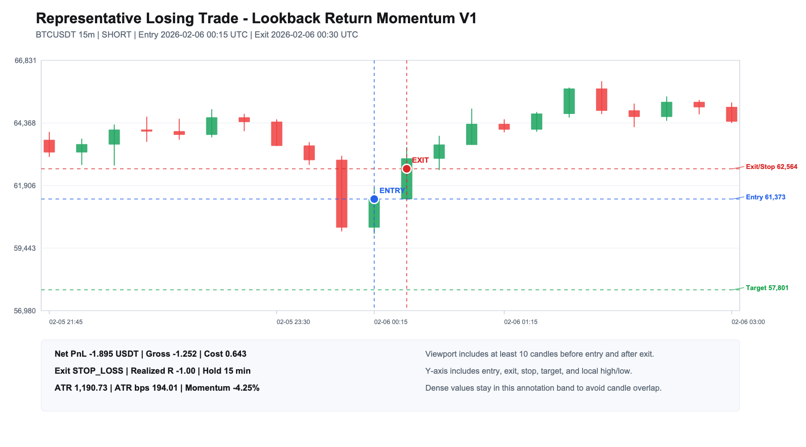

1. 핵심 요약
Lookback Return Momentum은 최근 N개 완료봉의 종가 수익률이 충분히 크면 같은 방향의 흐름이 다음 몇 개 봉에도 이어질 수 있다고 보는 전략입니다. 이번 재작성에서는 손절을 1 ATR로 고정하고 목표가를 2.0, 2.5, 3.0 ATR로 넓힌 저장 결과를 새 hELLO 스킨 기준으로 다시 정리했습니다.
| 구분 | 구조 | 결과 |
|---|---|---|
| 이전 구조 | 손절 1.0 ATR / 목표 1.0 ATR | 비용 조건을 통과한 진입 없음 |
| 현재 비교 | 손절 1.0 ATR / 목표 2.0, 2.5, 3.0 ATR | 1m은 2.5 ATR부터, 5m와 15m은 2.0 ATR부터 진입 발생 |
| 핵심 결과 | 모든 체결 조합 | 비용 반영 후 순손익 음수 |

2. 가설
- 최근 완료봉 수익률이 기준을 넘으면 이후 보유 구간에서도 같은 방향의 흐름이 이어질 것이다.
- 목표가를 손절보다 멀리 두면 비용을 반영한 보상 구조가 개선되어 일부 진입이 비용 조건을 통과할 것이다.
3. 전략에 포함된 가정과 이론적 배경
이 전략은 최근 수익률이 단기 주문 흐름과 참여자 반응을 일부 요약한다고 봅니다. 가격이 모든 정보를 즉시 반영하지 않거나 추세 추종 참여가 이어지면 최근 움직임이 다음 몇 개 봉까지 지속될 수 있습니다.
Jegadeesh and Titman(1993)의 가격 모멘텀 연구와 Moskowitz, Ooi, and Pedersen(2012)의 시계열 모멘텀 연구는 최근 수익률이 이후 수익률과 연결될 수 있다는 넓은 배경을 제공합니다. 다만 이 리포트의 대상은 분 단위 BTCUSDT close-to-close 신호이므로, 그 배경이 곧바로 비용 이후 수익성을 보장하지는 않습니다.
- 진입은 최근 완료봉 구간 수익률이 양의 기준을 넘으면 Long, 음의 기준을 넘으면 Short로 처리합니다.
- 위험 거리는 ATR(14), RMA로 잡습니다. 변동성이 커질수록 손절과 목표가도 함께 멀어집니다.
- 손절은 1 ATR로 고정하고 목표가는 2.0, 2.5, 3.0 ATR로 비교했습니다.
- 빠른 신호는 거래 수와 비용 부담을 키웁니다. 평균 후속 움직임이 비용과 손익비를 넘지 못하면 기대값은 낮아집니다.
E[R] = P(win) x AvgWin - P(loss) x AvgLoss - Cost4. 백테스트 설정
| 항목 | 내용 |
|---|---|
| 대상 | BTCUSDT OHLCV |
| 기간 | 2026-02-01 00:00 UTC 이상, 2026-05-01 00:00 UTC 미만 |
| 봉 주기 | 1분, 5분, 15분 |
| 진입 신호 | 최근 완료봉 구간 수익률이 기준 이상이면 같은 방향으로 진입 |
| 1분 설정 | lookback 20봉, holding 5봉, threshold 0.0004 |
| 5분 설정 | lookback 12봉, holding 6봉, threshold 0.0006 |
| 15분 설정 | lookback 8봉, holding 4봉, threshold 0.0008 |
| 위험 거리 | ATR(14), RMA |
| 손절 / 목표가 | 손절 1.0 ATR 고정, 목표가 2.0 / 2.5 / 3.0 ATR 비교 |
| 최소 ATR 조건 | 0 bps, 20 bps 비교 |
| 거래비용 | 수수료, 스프레드, 슬리피지 반영 |
| 포지션 크기 | 초기 1,000,000 KRW를 1,500 KRW/USDT로 환산, 거래당 현금 10% 사용 |
5. 결과
비용 조건을 통과한 지점
대칭적인 1 ATR 목표에서는 비용 조건을 통과한 거래가 없었습니다. 목표가를 넓히자 1분은 2.5 ATR부터, 5분과 15분은 2.0 ATR부터 실제 진입이 생겼습니다.
| 봉 주기 | 진입 시작 목표가 | 진입 수 | 비교 기준 |
|---|---|---|---|
| 1m | 2.5 ATR | 6 | 1.0 ATR 목표에서는 0건 |
| 5m | 2.0 ATR | 7 | 1.0 ATR 목표에서는 0건 |
| 15m | 2.0 ATR | 24 | 1.0 ATR 목표에서는 0건 |

비용 반영 후 성과
진입이 생겼다는 사실과 수익성이 생겼다는 사실은 다릅니다. 모든 체결 조합에서 비용 반영 후 순손익은 음수였습니다.
| 봉 | 목표 ATR | 진입 | 거래 | 비용 전 | 비용 | 순손익 | 수익률 | 승률 |
|---|---|---|---|---|---|---|---|---|
| 1m | 2.0 | 0 | 0 | 0.000 | 0.000 | 0.000 | 0.00% | N/A |
| 1m | 2.5 | 6 | 6 | 0.019 | 1.882 | -1.863 | -0.28% | 16.67% |
| 1m | 3.0 | 44 | 44 | -0.202 | 13.211 | -13.413 | -2.01% | 15.91% |
| 5m | 2.0 | 7 | 7 | -0.420 | 2.644 | -3.064 | -0.46% | 42.86% |
| 5m | 2.5 | 55 | 55 | -5.831 | 18.504 | -24.335 | -3.65% | 20.00% |
| 5m | 3.0 | 237 | 237 | 0.733 | 70.236 | -69.503 | -10.43% | 24.05% |
| 15m | 2.0 | 24 | 24 | -3.984 | 9.907 | -13.891 | -2.08% | 16.67% |
| 15m | 2.5 | 186 | 186 | -5.967 | 59.967 | -65.934 | -9.89% | 22.58% |
| 15m | 3.0 | 592 | 592 | 0.398 | 164.288 | -163.890 | -24.58% | 20.44% |

거래비용 영향
TP 3.0 ATR 조합에서 5분과 15분은 비용 전 손익이 보합권이었지만, 수수료와 슬리피지를 반영한 뒤 손실로 바뀌었습니다. 1분은 비용 전 손익도 음수였습니다.
| 봉 | 거래 | 비용 전 | 비용 | 순손익 | 수익률 | 기대값 | 승률 |
|---|---|---|---|---|---|---|---|
| 1m | 44 | -0.202 | 13.211 | -13.413 | -2.01% | -0.304848 | 15.91% |
| 5m | 237 | 0.733 | 70.236 | -69.503 | -10.43% | -0.293263 | 24.05% |
| 15m | 592 | 0.398 | 164.288 | -163.890 | -24.58% | -0.276842 | 20.44% |

6. 대표 거래
15분 TP 3.0 ATR 조합에서 순손익이 가장 컸던 거래와 가장 작았던 거래를 함께 봤습니다. 둘 다 ATR이 충분히 커서 비용 조건은 통과했지만, 결과는 목표 도달과 손절 도달로 갈렸습니다.
| 구분 | 방향 | 진입 | 청산 | 청산 사유 | 비용 전 | 비용 | 순손익 | 실현 R |
|---|---|---|---|---|---|---|---|---|
| 수익 거래 | Short | 2026-02-05 23:30 UTC | 2026-02-06 00:00 UTC | 목표가 | 3.069 | 0.634 | 2.435 | 3.000 |
| 손실 거래 | Short | 2026-02-06 00:15 UTC | 2026-02-06 00:30 UTC | 손절 | -1.252 | 0.643 | -1.895 | -1.000 |


7. 해석
이번 결과의 핵심은 비용 조건 통과와 전략 우위가 서로 다른 문제라는 점입니다. 목표가를 넓히면 진입은 생겼지만, 실제 거래의 승률과 기대값이 비용을 넘을 만큼 좋아지지는 않았습니다.
현재 버전은 이 조건에서 비용 반영 후 유효한 전략으로 보기 어렵습니다. 다만 이 결과만으로 모멘텀 전략 전체를 기각하기는 이릅니다.
이번 결과가 보여준 범위는 하나의 V1 구현, BTCUSDT, 2026년 2월부터 4월까지의 구간, 1분·5분·15분 봉, close-to-close lookback 신호, 특정 ATR 보상/비용 격자입니다. 상위 타임프레임 확인, regime 구분, 유동성 필터, 방향 지속 확인, 다른 기간과 심볼, OOS/WFO와 기준선 비교는 아직 이 결과에 포함되지 않았습니다. 따라서 이번 결과는 현재 구현이 비용을 넘지 못했다는 근거이지, 전략군 전체를 기각할 근거는 아닙니다.
- 1분은 2.5 ATR부터 진입이 생겼지만 거래 수가 6건으로 적었고, 3.0 ATR에서도 승률이 15.91%에 그쳤습니다.
- 5분과 15분은 TP 3.0 ATR에서 비용 전 손익이 양수였지만, 각각 70.236 USDT와 164.288 USDT의 비용을 감당하지 못했습니다.
- 15분 TP 3.0 ATR은 거래 수가 592건으로 가장 많았지만 승률은 20.44%였습니다. 목표가까지 이어진 거래보다 손절과 시간 청산이 많았습니다.
- 최소 ATR 20 bps 조건은 너무 낮았습니다. 이미 통과한 거래의 ATR이 그보다 컸기 때문에 실제 진입 목록을 줄이지 못했습니다.
보완점은 다음과 같습니다.
- ATR 하한을 비용 공식에서 역산한 값 이상으로 올려야 합니다. 20 bps는 실제 필터 역할을 하지 못했습니다.
- 진입 직후 같은 방향의 추가 확인 조건을 넣어야 합니다. 시간 청산과 손절이 많다는 점은 초기 모멘텀이 충분히 이어지지 않았다는 뜻입니다.
- 유동성이 낮거나 스프레드가 넓어지는 시간대를 분리해야 합니다. 짧은 봉 전략은 비용과 체결 품질에 더 민감합니다.
- 전략군 전체로 판단 범위를 넓히려면 OOS/WFO, 기준선 비교, regime segmentation, 다른 심볼과 기간 검증이 필요합니다.